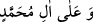
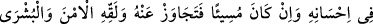
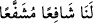

ailesini mübarek kıldığın gibi. Şüphe yok ki sen hamîdsin, mecîdsin, bütün övgü,
azamet ve celâl sana aittir.[261]
Bu salevâtın mânâsı, “Allah’ım! Muhammed’e kâmil bir salât ile salât et” demektir.
Nitekim, metinde salât’ın mutlak olarak zikredilmesi buna delalet etmektedir.
“__WORD__” ifâdesi, “Muhammed’in âilesine de İbrâhîm’e ve ailesine salât ettiğin
gibi salât et!” demektir. Meşhur olduğu gibi müşebbehün bih’in (yani Hz. İbrahim ve
ailesinin), müşebbehten (yani Peygamberimizin ailesinden) daha güçlü olmasını
gerektirmesi bir problem çıkarmaz. Nitekim Kuhistânî’de böyle geçmektedir.
Sonra bir tekbir daha alır ve hem ölü için hem de sağ-ölü bütün müslümanlar için duâ
eder. Uyûnü’l-hakâik adlı eserde geçtiği üzere bilinen şu duânın okunması sünnettir:
Allah’ım! Dirimizi, ölümüzü, burada olanımızı, olmayanımızı, erkeğimizi,
kadınımızı, küçüğümüzü, büyüğümüzü bağışla.
Allah’ım! Aramızdan yaşatacaklarını İslâm üzerine yaşat, öldüreceklerini iman
üzere öldür. Bu ölüye de kolaylık ve rahatlık ver, onu bağışla.
Allah’ım! Bu kişi iyi bir kimse idiyse, sen onun iyiliğini artır; eğer kötülük işleyen
birisi idiyse, günahlarını bağışla. Onu güven, müjde, ikram ve rahmetine yaklaştır.
Ey merhamet edenlerin en merhametlisi olan Allah’ım.[262]
Sabî (küçük çocuk) veya deli için kılınan namazda istiğfarda bulunulmaz. Çünkü
onların günahları yoktur. Bunlar için yukarıdaki duâ yerine şöyle denir:
Allahım! Sen onu bizim için önden gönderilmiş bir sevap vesilesi kıl, Allahım! Onu
bizim için ecir vesilesi ve âhiret azığı eyle. Allahım! Onu bize âhirette sözü geçen bir
şefaatçı kıl.
Yukarıdaki duâları bilmeyenler şu duâyı okur: